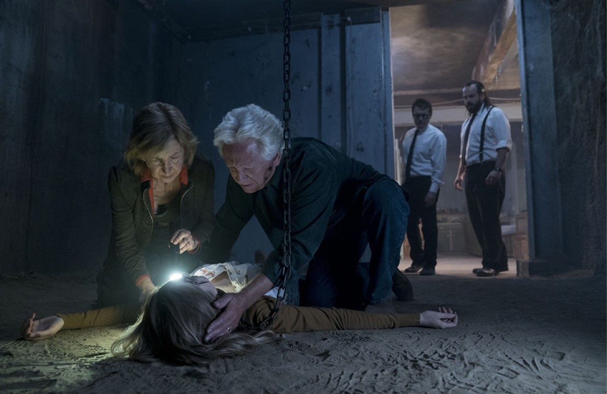

'인시디어스' 시리즈가 시작된 그 집, 드디어 공포의 마지막 비밀이 밝혀진다!
자신의 집에서 기이한 일들이 일어난다는 한 남자의 전화를 받게 된 영매 엘리스(린 샤예). 찾아간 그 곳은 다름 아닌 자신이 어린 시절 살았던, 뉴멕시코의 고향집이다. 수십 년 만에 다시 찾은 집에서 벌어지는 정체불명의 사건을 파악하기 위해 나선 엘리스. 어린 시절 자신이 겪었던 기억하고 싶지 않은 공포와 마주하게 되는데...
유저점수 5.4/10
신선도 31%
평점 5.9/10
